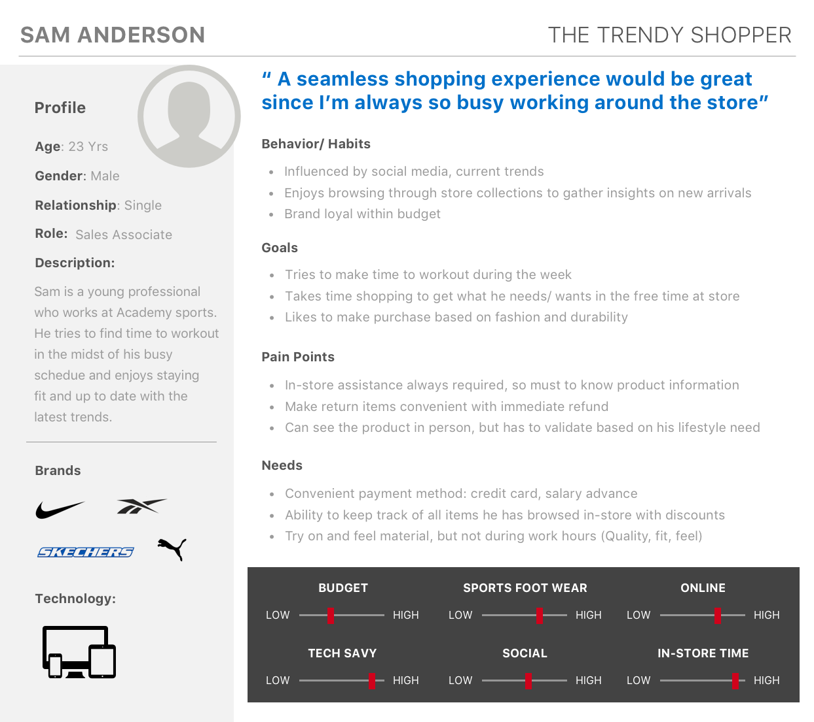

An innovative mobile app that curates the Academy Sports + Outdoors employees’s intra-business shopping experience for Top brand footwears.
After individually brainstorming and researching current events in the retail landscape — determined that there was a great opportunity within the athletic wear industry among employees too. With Academy’s mission in mind, our team was very inspired to develop an innovative app that would help encourage more users to feel like they’re part of the Academy’s fitness wear and eventually add more of thier other best selling products.
I acted as the product owner — as well as the researcher and visual designer. I shifted gears every time to address user needs and expectations that I collated in all of my interviews. Everyone I talked to cited it as one of the most well-liked provision they have been longing to be benefitted.
Academy Sports is one of the US nation's largest sporting goods and outdoor stores, accomplishing exactly what they set out to do and they have scaled up business to employees. With an overwhelming amount of merchandise, there is an opportunity to induce purchase of top brand footwear among employee - target audience with an intuitive mobile app.
Build deep understanding with consumers. In order to do so, pursued analysis to strive to deliver an integrated marketplace with compelling retail experiences. Wanted to design a mobile app that will assist in enhancing a employee’s intra business experience.
Potential Key Performance Indicators (KPI’s)

Academy Sports is one of the US nation's largest sporting goods and outdoor stores, accomplishing exactly what they set out to do and they have scaled up business to employees.On the product level, there is rarely any complaints.
Users search and wait–in anxiousness– to delve into & shop what is new in discount sales in a premier sports wear, outdoor lifestyle and much more.. This is a repetitive process that can be made more efficient for any user, so I set out to design a concept feature to do it.
Analyzed a number of competitors and other comparative brands, including Academy’s existing site to understand what features are currently available and what could be implement to create intuitive experience. To gain a deeper understanding I interviewed 4 of Academy Sports employees. Here are the key highlights from these chats:
To sum up my findings, I made a quick persona with above key highlights. Throughout the design process, I referred back to this to prioritize and drive my design decisions.
Findings provided more insight and understanding to create potential users for app. To sum up my findings, I made a primary persona out of others. Throughout the design process, I referred back to this persona to prioritize and inform my design decisions.

After conducting interviews with few employees, individually wrote out key words and ideas that I found from each user. Using this was clearly able to lay out the information architecture to gain a better understanding of what ideas were prioritized and what was trending across different users.
Takeaways:
User stories overall vary in granularity and extremely detailed as well. Below are few anecdotes from big stories.

I do the majority of my sketching on whiteboards, if not will be happy to stick to paper hand drawns. I was attempting to identify a user flow, which was Sketched out step by step, right from employe account registration process, product discovery, checking reviews and item availability. “Increase the ability for the user by having minimal clicks to get to destinations”

I wanted to create the features with as little hassle to the user as possible. After many sketches and iterations, was able to produce the first low fidelity wireframes along with user flow of our app. With finer details crafted out of IA keeping user in mind, I laid out high-fidelity wireframes with detailed descriptions of interactions and how the elements will behave.
These wireframes show a progression of the app eventually trimmed down to it's bare necessities and trying to limit how many interactions would be necessary for the user.

We believe our users are intelligent, creative folk who would enjoy being inspired by all means. So we created a series of screens based on user phenomena that are not stand alone - indeed blends with user interaction

With so much data-driven design decisions evolved, I was sure that this mobile app has a cross-potential and the learnings can be taken to direct BtoC consumer app as well.